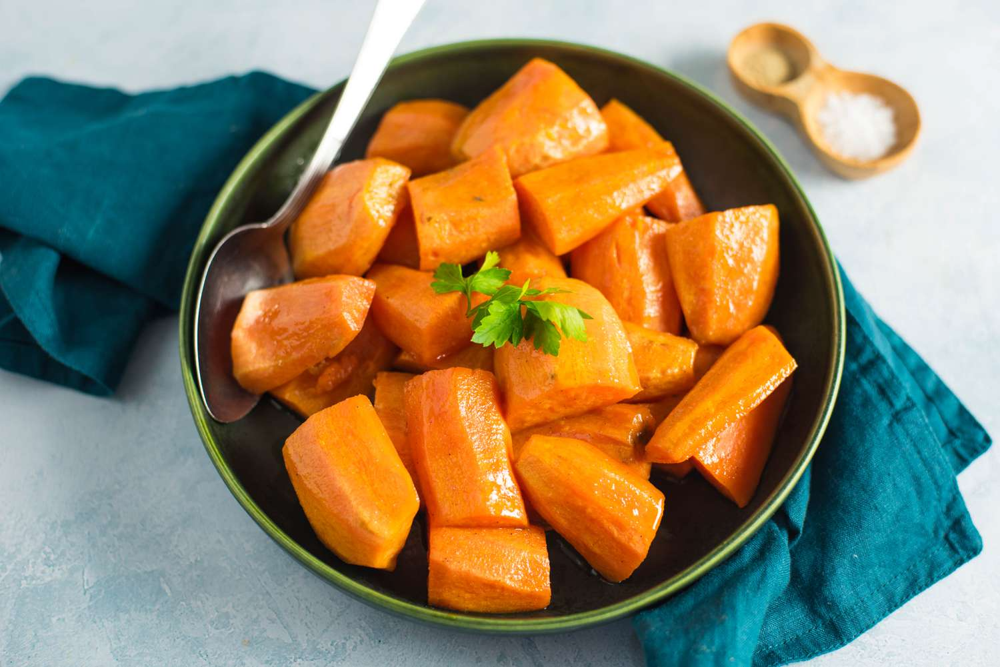

Inhames com Cobertura

Doces e saborosos... O açúcar dá um toque de caramelo.
Duração 40min  2 à 3 Porções
2 à 3 Porções
Ingredientes do jogo: Inhame, Açúcar
Esta receita restaura 200 de energia, 80 de saúde
Pode ser obtida através do canal Rainha do Molho e é vendida por 200g.
Ingredientes
- 1 ou 2 inhames ou batatas-doces
- 3 colheres de sopa de margarina
- 1/4 xícara de açúcar mascavo
- 2-3 colheres de sopa de xarope de bordo
- Noz-moscada e canela (à gosto)
Modo de Preparo
- Pré-aqueça o forno a 190°C. Lave e esfregue os inhames para remover qualquer sujeira. Nesse momento, você pode descascar os inhames se quiser, mas eu mantive a pele. Corte os inhames em fatias e coloque-os uniformemente em uma assadeira untada. Não recomendo usar uma assadeira de biscoitos porque as laterais não são suficientemente profundas.
- Em uma panela pequena, derreta a margarina/manteiga em fogo baixo e adicione o açúcar mascavo. Mexa até que o açúcar se dissolva e, em seguida, adicione o xarope de bordo e continue mexendo por mais um minuto. O resultado será um marrom dourado suave e profundo.
- Regue a calda sobre as fatias de inhame, virando-as com um garfo ou pinça até que estejam completamente cobertas pela cobertura. Polvilhe noz-moscada e canela por cima.
- Cubra a assadeira com papel alumínio e leve ao forno. O tempo de cozimento varia de acordo com o tamanho das fatias. As fatias mais finas, como as que fiz, levaram 30 minutos. As mais grossas podem levar cerca de 45 minutos. Elas devem estar macias quando perfuradas com um garfo, mas não muito moles.
- Retire as fatias de inhame da frigideira, regue com um pouco do excesso de glacê e coma enquanto estiverem quentes.